全部章节S03 · 永州柳子庙·背得走的与留下的
本章已通过 · 13 张剧情图。点击图查看大图。
 江湾村民脚夫
江湾村民脚夫S03-01 · 江湾村头

转身护住新塞的青菜，主角和背带拧成一团；为后面的‘贵重行李’误会埋伏笔。
168 KB原图对照
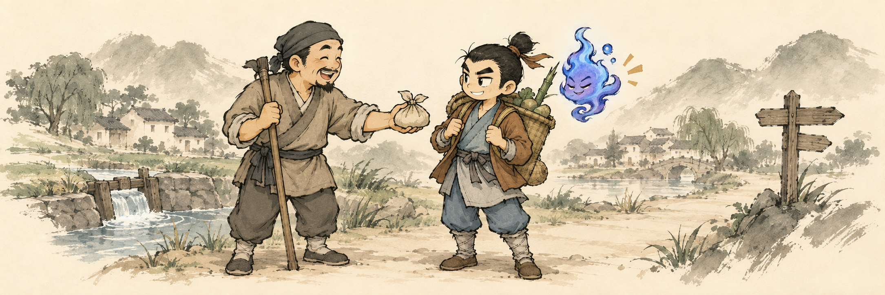
S03-02 · 前往永州
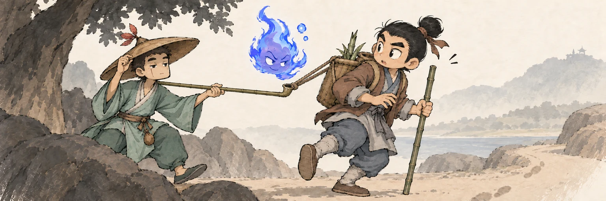
重逢先由烟杆托住滑落菜篮发生，随后揭出金贵是特意绕路来完成自己的心愿。
146 KB原图对照
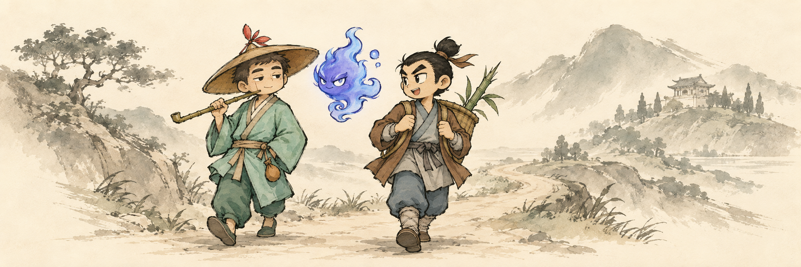
S03-03 · 参天古柏密林
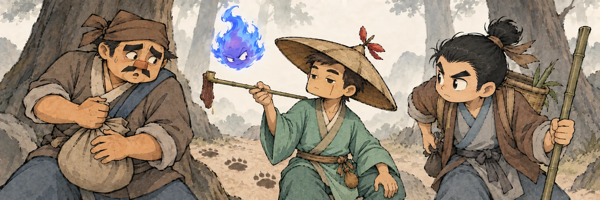
金贵挑起肉干，脚夫下意识捂住同样漏油的袋口，动作直接出卖他。
205 KB原图对照
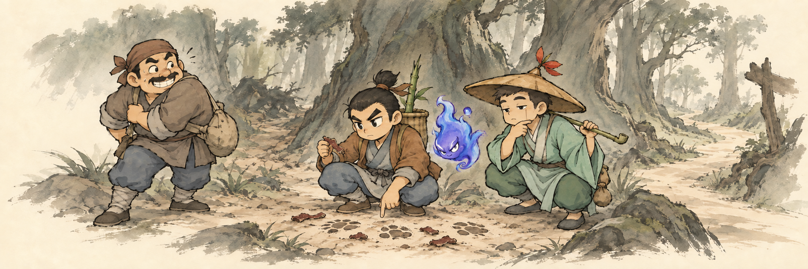
S03-04 · 柳子庙
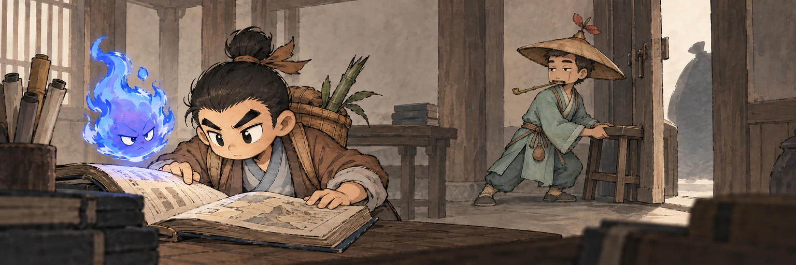
金贵本想安心看书，却用凳子卡住后门；人物愿望与眼前警戒形成张力。
134 KB原图对照
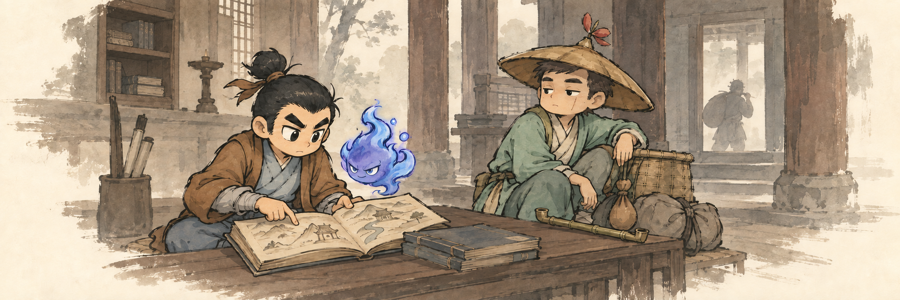
S03-05 · 火险抢救
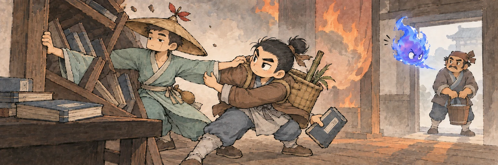
金贵拉回抢书的主角，主角反手稳住金贵；两人互救，而非主角独自逞英雄。
185 KB原图对照
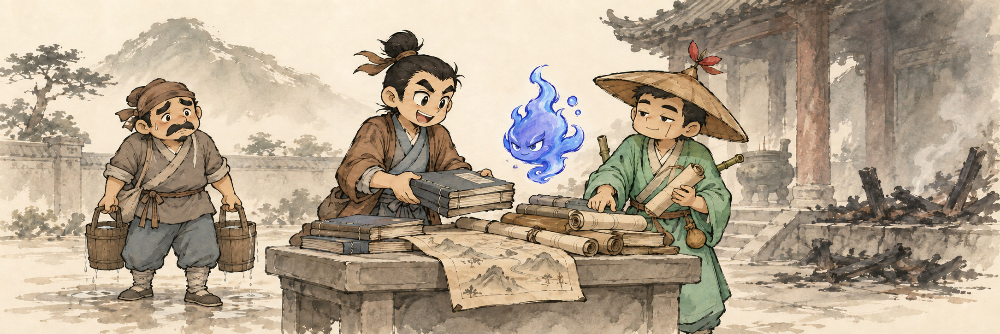
S03-06 · 永州简图
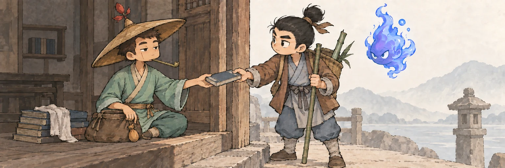
门槛两侧一递一接，金贵放下行囊主动留下，回收最初‘终于能坐一坐’的心愿。
145 KB原图对照
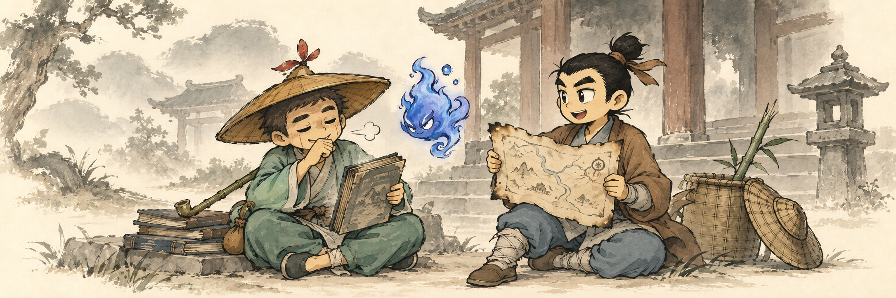
S03-07 · 土司寨遗痕
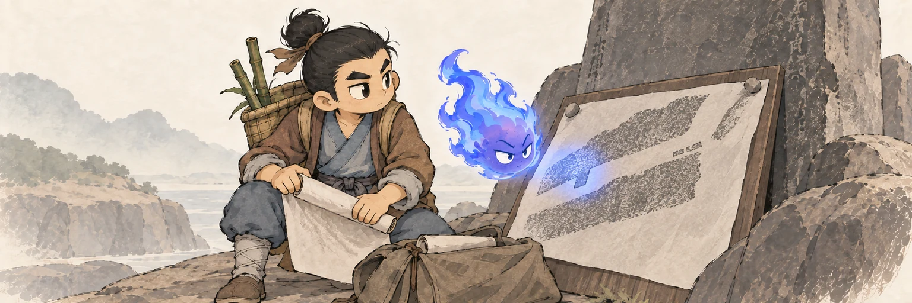
幽白不再遮住错处，而是主动照亮自己曾催抄的错误，延续第一章的成长。
162 KB原图对照
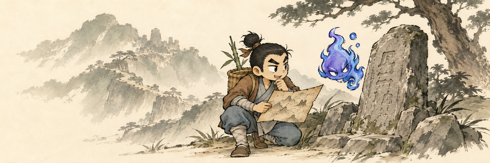
S03-08 · 偶遇旧佣
旧佣人拿出只属于自己的小小行程，第一次不需要替谁赶时间。
121 KB原图对照
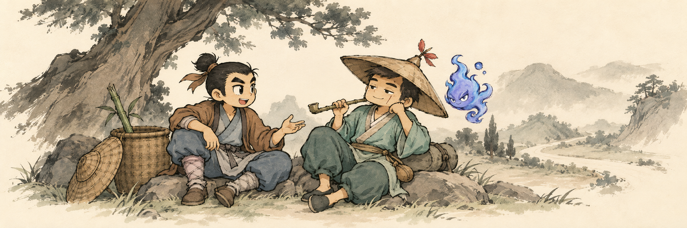
S03-09 · 假意相助
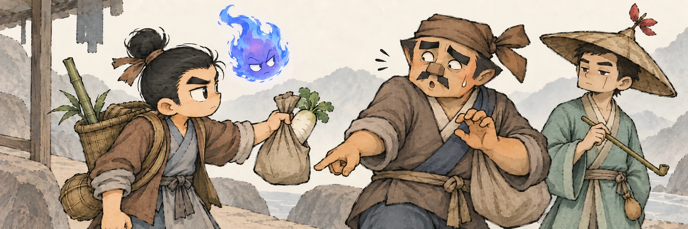
伸手接包的姿势在萝卜露头时急转弯，贪念变成可读的身体动作。
180 KB原图对照
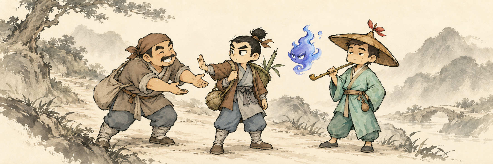
S03-10 · 密林遇劫
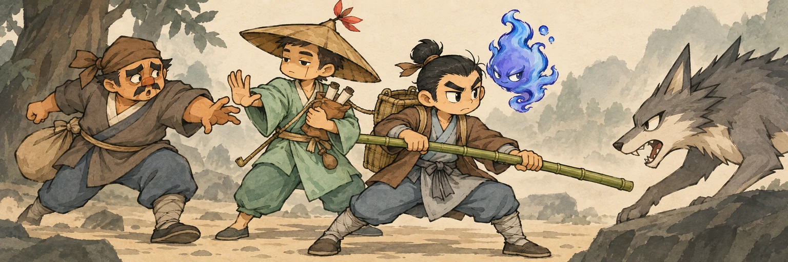
主角横竿挡兽，金贵贴近背篓护住露出卷轴的图袋，脚夫伸手抓空；一眼看清两位同伴分工护人护图。
195 KB原图对照
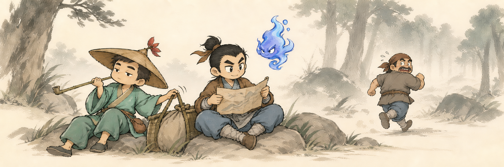
S03-11 · 侥幸脱逃
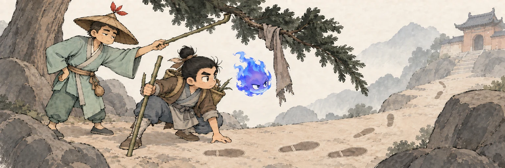
倒退脚印试图掩饰方向，挂在低枝上的布带却指出真实逃路。
167 KB原图对照
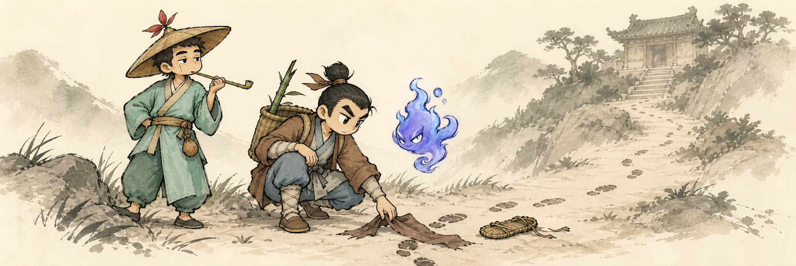
S03-12 · 揽财纵火
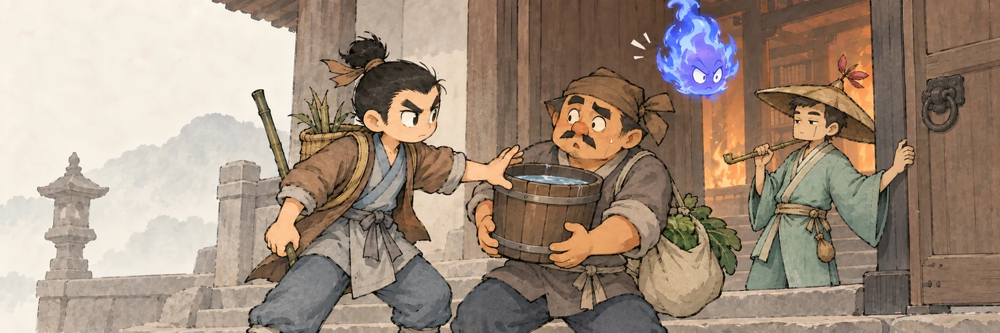
偷错菜袋的脚夫被当场塞入水桶，犯罪的借口转成必须实际承担的救火动作。
154 KB原图对照
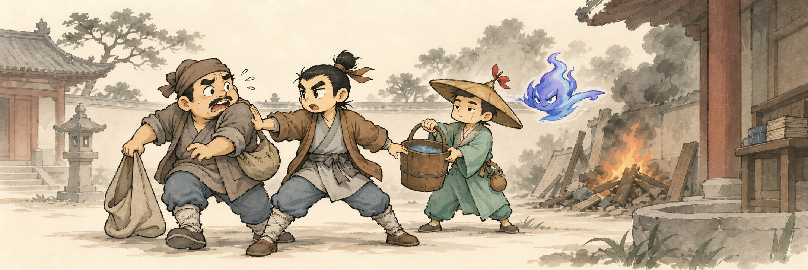
S03-13 · 余善尚存
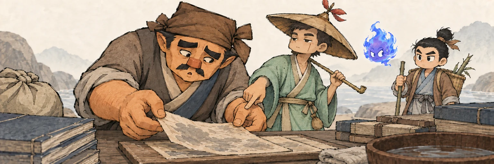
急着认错的人被迫慢下来，小心托住一页湿纸；用动作表达尚未完成的补救。
171 KB原图对照
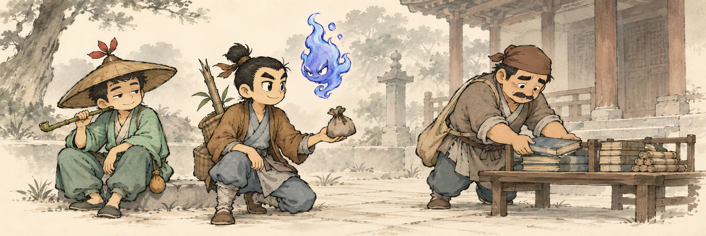